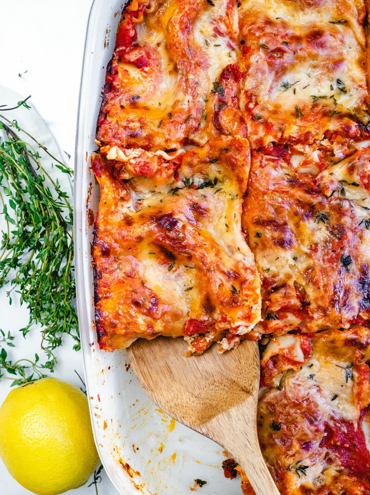

Back to Homepage
Vegetarian Lasagna

Description
When it comes to lasagna recipes…well, this one is tops. Meet our best vegetarian lasagna with ricotta, aka vegetarian lasagne! We’ve been honing meatless lasagna recipes for years. This one is the culmination of all of our research: and dang, is it good (if we may say so ourselves). The tomato sauce has just the right zing and garlic nuance, and the spinach ricotta cheese filling is classic and creamy. It's scented with fresh thyme and a little lemon zest, which takes it to over the top status. There's no one who will turn down a piece! At least, who we’ve met.
See below for the ingredients and steps to create.
Ingredients
For the Tomato Sauce (or substitute 4 cups of your fav marinara sauce)
- 4 large garlic cloves
- 2 tablespoons unsalted butter
- 1 28-ounce can crushed tomatoes, fire roasted if possible
- 1 15-ounce can tomato sauce, fire roasted if possible
- 1 teaspoon dried basil
- 1 teaspoon dried tarragon (or oregano)
- 3/4 teaspoon kosher salt
- 1 tablespoon cornstarch (or arrowroot starch)
For the Lasagna
- 10 to 12 lasagna noodles (8 ounces, gluten-free as necessary)*
- 5 ounces baby spinach** (or 8 cups chopped spinach)
- 2 tablespoons chopped fresh thyme
- Zest of 1/2 lemon (about 2 teaspoons)
- 1/4 teaspoon ground nutmeg
- 16 ounce (2 cups) ricotta cheese
- 1 cup shredded Parmesan cheese, divided
- 3 cups (12 ounces) shredded mozzarella cheese, divided
- 1 teaspoon kosher salt
- Fresh ground black pepper
Steps to Complete!
- Preheat: Preheat the oven to 375 degrees Fahrenheit.
- Boil the noodles*: Bring a large pot of well salted water to a boil. Boil the noodles until just before al dente, according to the package instructions, stirring often. Drain the noodles, then drizzle a baking sheet with a bit of olive oil. Lay the noodles flat onto the sheet, then turn them over so they become coated with olive oil to prevent sticking.
- Prepare the tomato sauce (or skip with purchased marinara): Mince the garlic. Melt the butter in a saucepan over medium heat. Add the garlic and sauté, stirring frequently. Once the garlic is fragrant after about 1 or 2 minutes, turn down the heat and carefully add the tomatoes (avoid any momentary spitting), tomato sauce, basil, tarragon or oregano, kosher salt, and several grinds of black pepper. Remove 1/4 cup of the sauce and stir it with the cornstarch, then add it back to the pan (this helps to thicken the sauce). Simmer on low heat while making the remainder of the recipe, at least 15 minutes. When ready to use, remove the pan from the heat.
- Wilt the spinach: In a large skillet, mound the greens and ¼ cup water in the skillet and cook, stirring often, until completely wilted and reduced, about 3 minutes (the greens significantly reduce when cooking; if necessary, sauté in batches.) Sprinkle with 2 pinches of kosher salt and stir, then remove from the heat and allow to cool slightly. Once cooled, use your hands to squeeze out all excess liquid and discard. Roughly chop the spinach.
- Prepare the cheese filling: Destem the thyme, then roughly chop the leaves. Add 1 1/2 tablespoons thyme to a medium bowl and reserve about 1/2 tablespoon for topping the lasagna. To the bowl, add the lemon zest, nutmeg, ricotta cheese, ¾ cup Parmesan cheese, 2 cups shredded mozzarella cheese, kosher salt, and several grinds of black pepper. Stir to combine.
- Layer the lasagna: In a 9” x 13” baking dish, spread 1/2 cup tomato sauce on the bottom of the pan. Then top with 1 layer of noodles, half of the cheese mixture (in dollops then spread it out), half of the greens, and about 1 cup of the tomato sauce. Repeat again: 1 layer of noodles (you may need to cut a noodle in half for the side, depending on your pan), the remaining cheese mixture, the remaining greens, and 1 cup of the tomato sauce. Finally, top with noodles (again, you may need to cut a noodle in half for the top layer), then the remaining 1 1/2 cups of the tomato sauce. Sprinkle the entire top with the remaining 1 cup mozzarella cheese, 1/4 cup Parmesan cheese, and ½ tablespoon thyme.
- Bake the lasagna: Cover the pan with aluminum foil and bake for 40 minutes. Carefully remove the foil and bake another 10 minutes, until bubbly and browned. Let stand for 15 minutes before serving (this allows the lasagna to set). Leftovers can be refrigerated for 2 to 3 days and reheated in a 375°F oven. (You can also freeze leftovers: it’s easiest to cut it into single servings and freeze each in separate containers. To reheat, defrost the vegetarian lasagna the refrigerator, then place in a baking dish, cover with foil and reheat at 400 degrees for about 15 minutes, until warmed through.)